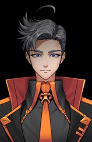

회색의 포마드머리. 튀어보일정도로 한 쪽으로 치솟아 있으며, 안테나같이 삐죽 솟아오른 머리카락이 눈에 띈다. S가 집중할 때 마다 꼿꼿이 서는 것 같기도..?
얼굴을 덮는 가면을 착용하고 있다. 가면에서 LED로 이모티콘이나 간단한 단어, 특수문자 등을 빛내어서 의사표현을 덧붙인다. 목부터 덮는 가면 고정용 장치가 턱까지 올라와 있으며 고정장치에 헬멧처럼 액정을 끼운 형태이다. 특이한 외관에 로봇인가 의구심이 들 수 도 있지만 이마와 손목, 발목에 피부가 드러나 있다. 또한 그와의 대화 몇 마디면 그 의심은 곧 사라질 것이다. 이렇게 강단 없는 AI로봇이 존재할까?
식사할 때는 액정을 뚜껑처럼 열 수 있어서 입만 내놓고 먹는다. 때문에, 입가에 점이 하나 있다는 사실만 알려져 있으며 그의 맨 얼굴을 본 자는 극히 드물다. 가면에서는 음성조작된 기계음 목소리가 성별무관 랜덤으로 튀어나온다.
몸은 길쭉길쭉하고 마른 편이다. 그의 맨 몸을 본 자도 없지만 근육이 있다던가 별로 탄탄해 보이지는 않는다.
가면 뒤의 얼굴: 중성적인얼굴. 속눈썹많고 눈썹이 짙다. 무표정인 상태에서도 눈이 휘어서 웃는상이지만 밝은 느낌이 아니며 소름돋는 느낌을 준다.
장난기가 많다. 그렇지만 가볍게 넘어갈 수 있는 정도까지만 선을 지킨다. (분위기 봐서 함) 자유롭고 편한 분위기를 좋아한다. 말이 많고 로봇 같아 보이는 외관에 맞지 않게 인간적인 느낌..(S: 사람이니까~)
말을 사람 짜증날 정도로 애매하게 말하는 경향이 있다. ‘네가 생각하는 것 그게 정답이야.’ 처럼 답변을 상대방에게 넘겨버린다. (‘그 상자에 네가 원하는 게 있어’ 같은 식..) 이렇게 어물쩡 말하곤 하지만 싫고 좋음이 확실한 부분에서는 이상한 산파술로 기적의 논리를 펼치며 빙빙돌려 표현한다.(주로.. 자신의 생존과 걸려있는 부분에서.. 나온다.(민트주먹을피하며))
위와 같은 화법은 답이 내려지지 않아도 좋을 대화에서 주로 그러하고 임무 중이나 참, 거짓 명확히 답이 있는 것에서는 제대로 말하려는 편.
중립을 고수하려는 경향이 있다.(그런데 트슈입단제의는 왜 받았을까요? 천천히알아봅시다 제가모르겠거든요 일단 선 성향이 강한친구긴해요.)
맨 얼굴이나 실명 등 자신에 대한 정보를 내놓기 꺼려한다. 가면으로 실제 감정 그대로 내비치는걸 좋아하지 않는다. (실제표정≠가면표정) 가면의 LED가 정신없이 수시로 바뀌고 움직인다.
전자파에 예민함. 사람 몸에 흐르는 미세한 전류마저 조절이 가능함.
신체에서 발생되는 전류를 전자기파로 치환할 수 있다.
-전자기파에 민감하여 전파의 흐름을 읽을 수도 있고 신체에서 발생되는 전기신호 또한 인지하고 조절할 수 있는 능력이다.
-해킹에 두각을 보인다. 기본적으로 수학능력이 일반인 보다 뛰어난 수준이며(뇌로 보내는 전기신호를 빠르게 돌림), 전자기기에 접촉해 네트워크나 파장에 간섭할 수 있다. 뇌파를 흘려보내 정보를 조작하는 것이 가능하다.
그 만의 악성코드(주로 명령을 반대로 바꿔버리게 하는 코드로 이루어져있다.)
예시) <비밀번호 ‘xxx’를 입력하지 못하면 열리지 않는 보안> 을
<비밀번호 ‘xxx’를 입력하면 열리지 않는 보안> 으로 바꿔버리게함. 그러면 xxx제외 아무거나 입력해도 열림ㅎ. 그러니까,
if (비밀번호xxx)
printf("보안잠금해제");
else
printf("잠금해제실패");이것을
if (비밀번호xxx)
printf("잠금해제실패");
else
printf("보안잠금해제");이렇게 바꿔버린 느낌이라고 보면됨(저코딩몰라요대충넘어가주세요ㅎㅎ)
를 흘리는 방식을 좋아한다. 본부에서 주로 보안시설 해킹/앞길을 막는 방해요소 상쇄/도면해킹후 경로제공 등으로 서포트하는 역할. 아주가끔 해킹으로 뚫지 못하면 직접 접촉하기 위해 현장에 나가기도 한다.
-마음대로 가면에 이모티콘을 띄우는 것도 그의 능력이라고 볼수있다. (뇌파를 헬멧에 보내 띄우는 느낌)
- 인간의 감정을 조절하는 뇌전도신호를 감지할 수 있기 때문에 본인은 감정조절을 잘 하는 편이다. 감정의 안정상태를 유지하기 위해 그 특이한 성격을 유지하는 듯 하다.
-사람과 접촉해서 반대로 사고/행동하게 만드는 전기신호를 흘려보내기도 가능하지만 그다지 사용하지 않는(좋아하지않음) 방식.
상사들과 초면인 상대에게는 존댓말, 반말을 튼 상대와 동료들과는 주로 반말로 대한다.
-
계승자 능력 발현하면서 생긴 증상: 어느 때부터 반대로 행동하게 되었다.
좋아하는 감정은 싫다고 표현하고 소중한 것에 막대하고 아껴야 할 것에 함부로 대했다.
에스는 이것 때문에 많은 상실과 슬픔이 있었고 이 저주에서 벗어나고 싶었던 에스는 확실한 표현보다는 중립의 위치에서 어느 쪽에도 서지 않고 두 방법 모두 정답이라고 애둘러 말하는 방법을 선택했던 것.(이 방법을 선택할 수 밖에 없었다기보다는 에스는 정신적 성장을 이루며 깨달은 것으로 머랄까.. 삶의 모토임)
(저는 현재의 에스는 과거의 어떤 문제를 타파하고 성장을 이룬 캐릭터로 만들고 싶었습니다…)
-가면을 쓰는이유
실제 감정과는 다르게 나타나는 표정 때문에 가면을 씀으로 자신의 진짜 감정을 표현하고 싶었던 것.
가려진 역설은 그 의미. 가면은 보통 감정을 숨기기 위해 쓰지만 에스는 가면으로 무언가 표현하고 싶었다. 가면으로 진실을 가리고 진실을 표현한다? 는 모순 머그런거..

이름: S (가명) / Arick Stancer (본명)
나이: ? (29)
키: 183 cm
생일: 6월 17일